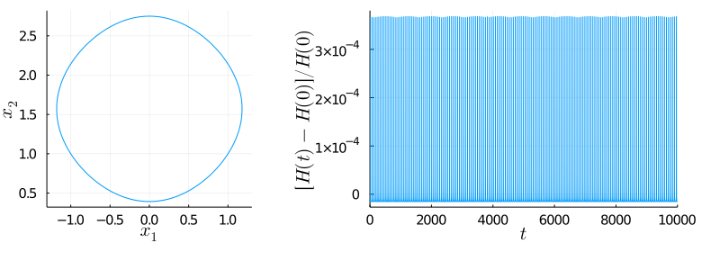
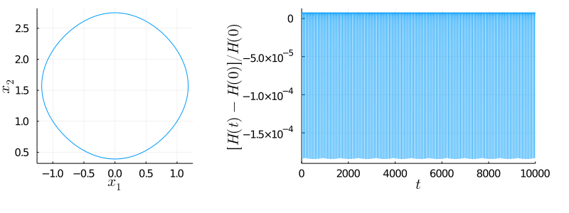

Massless Charged Particle with SPARK Integrators
Symmetric Projection
GLRK(1)pSymmetric
Plots • Symplecticity • Tableau: TableauVSPARKSymmetricProjection

GLRK(2)pSymmetric
Plots • Symplecticity • Tableau: TableauVSPARKSymmetricProjection
GLRK(3)pSymmetric
Plots • Symplecticity • Tableau: TableauVSPARKSymmetricProjection
GLRK(4)pSymmetric
Plots • Symplecticity • Tableau: TableauVSPARKSymmetricProjection
LobIIIAIIIB(2)pSymmetric
Plots • Symplecticity • Tableau: TableauVSPARKSymmetricProjection

LobIIIAIIIB(3)pSymmetric
Plots • Symplecticity • Tableau: TableauVSPARKSymmetricProjection
SOLVER ERROR: Simulation crashed in time step 12307. Absolute error (9.82399412342041e8) larger than allowed (1.0e6)
LobIIIAIIIB(4)pSymmetric
Plots • Symplecticity • Tableau: TableauVSPARKSymmetricProjection
LobIIIAIIIB(5)pSymmetric
Plots • Symplecticity • Tableau: TableauVSPARKSymmetricProjection
SOLVER ERROR: Simulation crashed in time step 14008. Absolute error (9.538056095394713e10) larger than allowed (1.0e6)
LobIIIBIIIA(2)pSymmetric
Plots • Symplecticity • Tableau: TableauVSPARKSymmetricProjection

LobIIIBIIIA(3)pSymmetric
Plots • Symplecticity • Tableau: TableauVSPARKSymmetricProjection
SOLVER ERROR: Simulation crashed in time step 20474. Absolute error (4.862964069544095e6) larger than allowed (1.0e6)
LobIIIBIIIA(4)pSymmetric
Plots • Symplecticity • Tableau: TableauVSPARKSymmetricProjection
LobIIIBIIIA(5)pSymmetric
Plots • Symplecticity • Tableau: TableauVSPARKSymmetricProjection
SOLVER ERROR: Simulation crashed in time step 24455. Absolute error (5.148943310302426e6) larger than allowed (1.0e6)